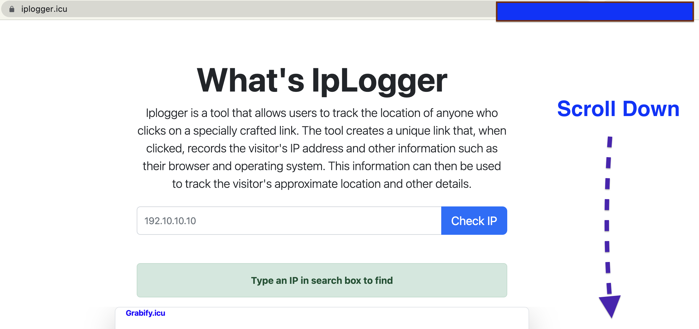

Welcome to IPLogger
IPLogger is a simple and free tool to track IP addresses of online visitors. It allows users to generate custom links to monitor the IP addresses of those who click on them, providing valuable data like device type, operating system, and geographic location.
What is IPLogger?
IPLogger lets you track the IP addresses of users who click on the custom URLs you generate. The service offers detailed analytics, including information about users' devices (mobile or desktop), operating system, and their geographic location.
How to Use IPLogger?
Step 1: Visit the home page and select the URL you want to track.
Step 2: Enter the destination URL (e.g., a landing page or product link), adjust the progress bar, and click "Generate".

Step 3: After generating the link, you'll see two options: "New Grabify Link" (for sharing) and "Tracking Link" (for your records).

Step 4: On the tracking page, click "Show Details" to view location information, or copy the IP address for further analysis or sharing.
Potential Uses of IPLogger
IPLogger can be used for a variety of purposes:
- Marketing Campaigns: Track how many people click your marketing links, identify their location, and gather data about the device types they are using.
- Website Traffic Monitoring: Monitor how much traffic your site is getting from various sources, and analyze patterns for better marketing optimization.
- Security: Track suspicious activity by identifying unknown or unusual IP addresses trying to access your content or website.
- Geolocation Targeting: Customize content based on user locations, such as offering region-specific promotions or ads.
Go To IPLogger about.html alternative_spypig.html catching.html email-ip-tracking.html example.html gmail-ip-tracking.html grabber.html ini.html ipgrabber.html ipgrabbertool.html ipintro.html ipintrod.html iplogger.html iplogger_intro.html iploggerEn.html iploggerintrocn.html iploggerWHAT.html iptracktool.html procon.html usecase.html
While IPLogger is great for tracking IP addresses, it's important to use it ethically and responsibly. Misusing the tool for phishing or malicious activities is strongly discouraged.